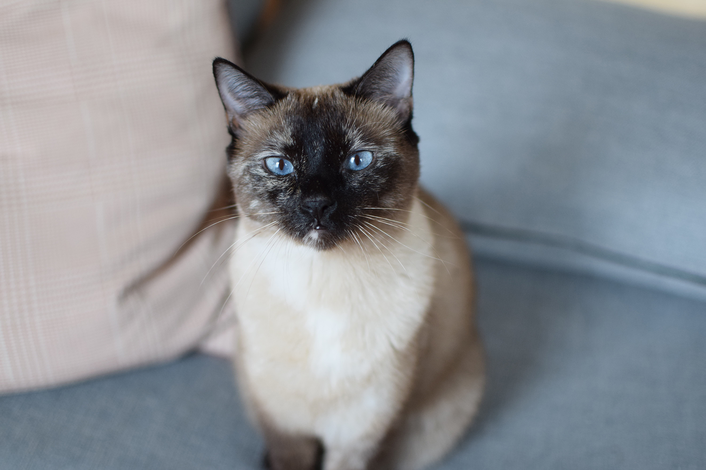
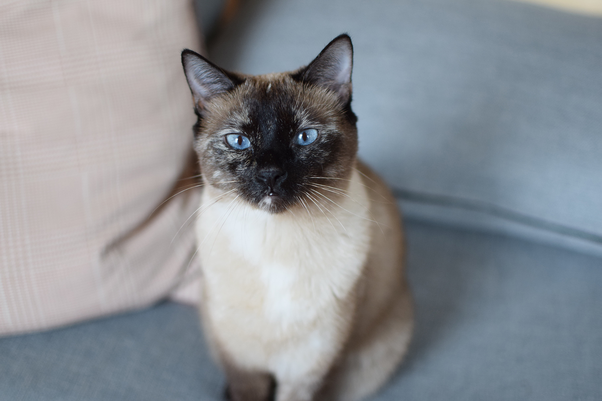

What lessons from artists can be integrated into design practice to make design thicker and more personal and intimate? How can designers put themselves into their work and resist uniformity while remaining commercially viable? The way designers are portrayed in the media are as functioning and driven individuals, who are free from the hardship and difficulties of living a creative life. Interviews with designers focus on their work and its’ relationship to conceptual inspiration rather than personal history. Alternatively, artistic practice deeply integrates personal history into bodies of work, and artist’s personalities, emotions, and life histories are always considered as important aspects of their practice. This paper addresses the work of Margaret Kilgalen, Ben Kinmont, and Peter Marigold. Kilgalen and Kinmont’s artistic practices are examined to indicate areas for inspiration, integration, and models of modes of creation that could offer new avenues for designers to expand the scope of their work. Peter Marigolds work as a designer pushes the boundaries of what is possible within a commercially viable practice. His practice demonstrates how designers are able to sell poetic narratives that are closely related to personal history. Finally, this paper address Aaron Simmons’s own work, and his proposition of a process for successfully creating work that is personal, intimate, and recognizable as a commercial object.
“While the roots of these images may not be readily available to the gallery-going public, they are sweetly familiar and truly nonhierarchical, evoking everyday places, markings, and people found throughout California.” – In the Sweet Bye and Bye, Euginie Joo, pg 14, 2005, Copyright California Institute of the Arts, Roy and Edna Disney/CalArts Theater, LA, California, USA
“Like the WPA and Mexican muralists so influential to generations of San Francisco painters, Kilgallen consciously employed a figurative style that would be accessible to the public. And like many of her contemporaries, she worked in both formal and informal exhibitions spaces, both inside and outside, commissioned to unsanctioned.” – In the Sweet Bye and Bye, Euginie Joo, pg 14, 2005
Kilgallen had a unique ability to create a vision both nostalgic and present, anachronistic and contemporary, grounded in gritty reality and floating in fantasy. Her work reveals how nostalgia can be transformed from sentimental reflection into a exercise of empowerment that ultimately underscores “the very magnitude of the quotidian.”” Alex Baker, “Matokie Lives!”, In the Sweet Bye and Bye, pg 60, 2005
“Margaret looked at the world as a place grotesquely oversaturated with information and images. So much so that, to her thinking, it was major problem with contemporary society. Peoples’ minds were overloaded and with that came massive confusion. Her artwork reflected this by incorporating all these words and images, many times overlapping and backwards, coming together to create an info-babble all her own. The big difference here was her technique. Margaret had a great appreciation of hand-drawn type and especially hand painted signs. By using hand technique to create visual confusion, she was at once reflecting the times we live in and making a commentary. There was certain desperation in her works as well, but it was less violent than Barry’s. Hers was more about the human spirit struggling to shine in the face of a constantly more mechanized world.” Beautiful Losers, “Least Likely to Succeed”, Aaron Rose, pg 42 “Her subject matter was almost completely female…Margaret’s women were painted walking, gossiping, riding bikes, and just generally going through the motions of their day. These were everyday ladies painted in a very flat perspective using bright, bold colors. It was obvious that some of them were autobiographical. The figures were juxtaposed with a wide variety of words and letterforms that she would paint onto adjoining panels or sew together like paper quilts. They looked beautiful all together.” Beautiful Losers, “Least Likely to Succeed”, Aaron Rose, pg 41
Even though their influences might be the same as their contemporaries from New York or Los Angeles, there are completely their own. Perhaps most obvious would be what I would call the “cluster method” of hanging exhibitions. Almost all of the artists form The Mission employ this method.” Beautiful Losers, “Least Likely to Succeed”, Aaron Rose, pg 42 “In the middle of the 1990s, when I was finished with a project on the street or in someone’s home, I would write a description of the experience to let my friends know what I had been up to. So when Christophe suggested a book it seemed logical to gather together these descriptions as well as write up those which were missing. The goal being to make them available to others beyond my circle of friends.
I chose the title prospectus to refer to a proposal or a suggestion for things to come. My projects have always followed a question-based practice, one where I am trying to explore the possibilities and limitations of an activity and what can and cannot happen from the different value structures that occupy our lives. In the context of this investigation the title Prospectus reveals my optimism that there are still places in which to do things and that there are still things to be done.” Prospectus, Ben Kinmont, Preface, pg. Antinomian Press, January 25, 2011, 1200 Copies, pg vii
“It’s easier to talk about art while washing dishes, Sunderland. I had gone downstairs to the City Public Library to ask if I could wash the librarians’ dirty dishes. Upstairs, in the Arts Centre, during the opening, I washed these dishes while people videotapes me, chatted, and then signed my body. Archive begun 1995. Sunderland, England. Seven people brought their dishes. Eighteen people videoed me, each then signing my body. Project can be repeated. In the collection of the artist.” Prospectus, Ben Kinmont, Preface, pg. Antinomian Press, January 25, 2011, 1200 Copies, pg 37
“Waffles for an opening. Many years later, I read that Robert Filliou had thought that art about life was not so important for what id for art, but for what it did for life.
For a two-month period people came to our house for waffle breakfasts. I was thinking about if it was safe for my family, how many would come, and who was trusting most. My biggest surprise was how my friends didn’t come, but strangers did. We signed the paper plates as a thanks for coming and I started to see it as the gift sculpture object.
Archive begun 1990. New York City. White Columns and my home over thirty-one days. 432 people took invitations. Thirty-two people ate waffles. Project can be repeated. Archive in the Bill Arning Collection.” Prospectus, Ben Kinmont, Preface, pg. Antinomian Press, January 25, 2011, 1200 Copies, pg 9